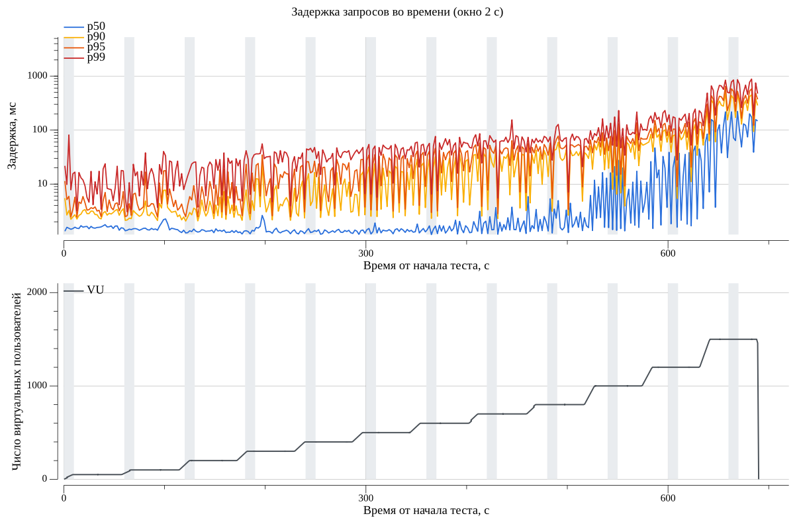
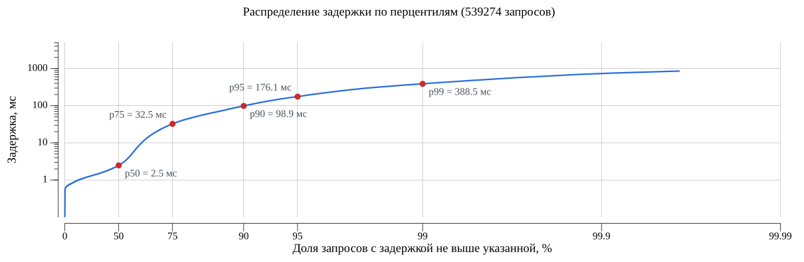
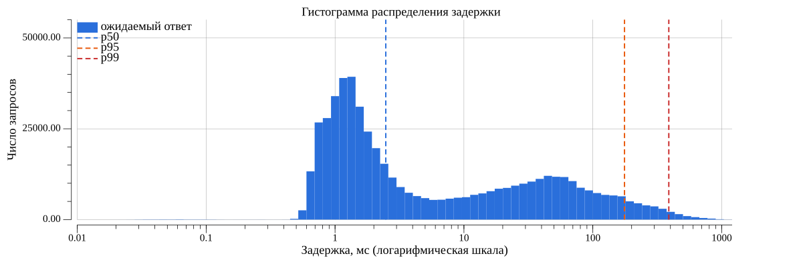
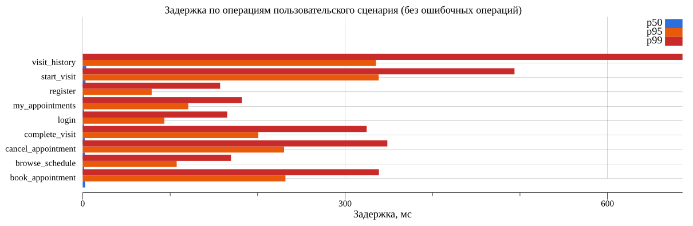
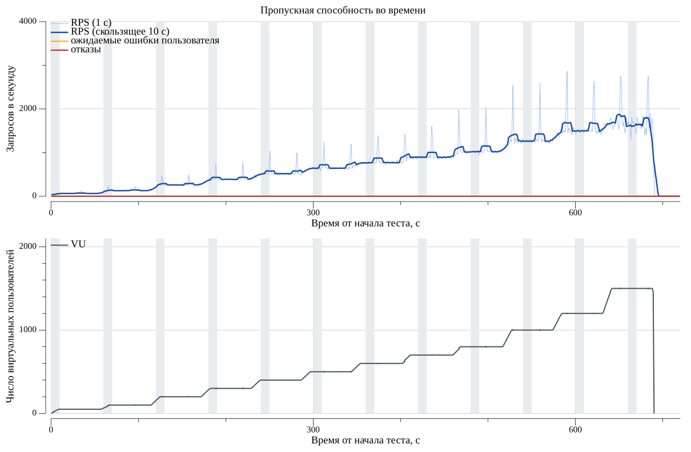
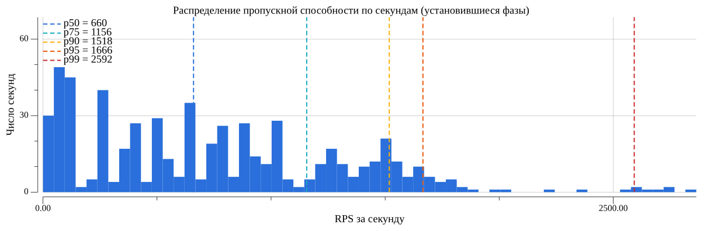
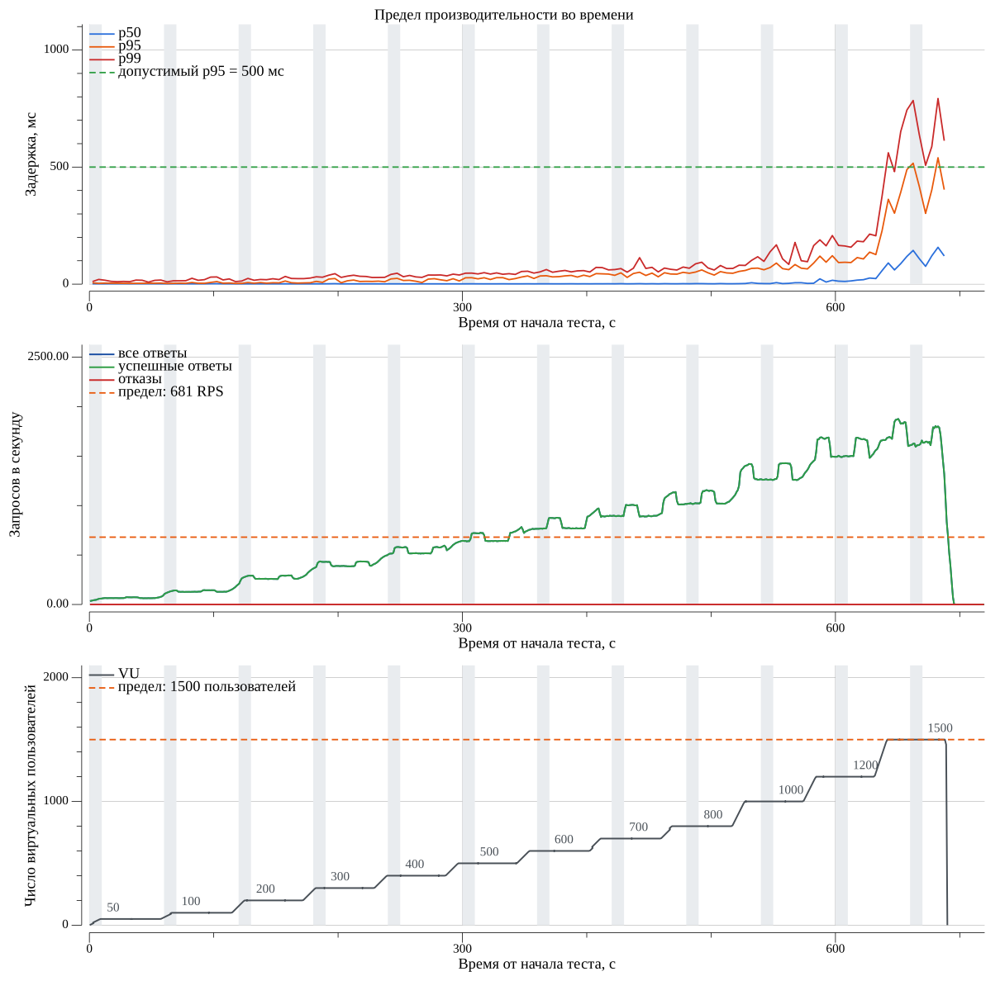
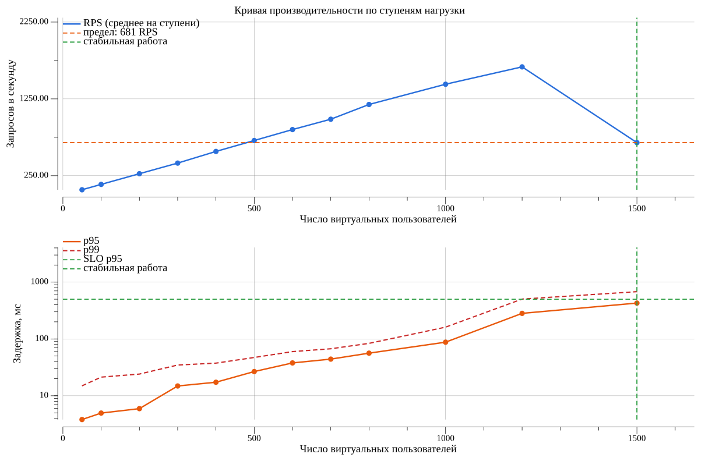
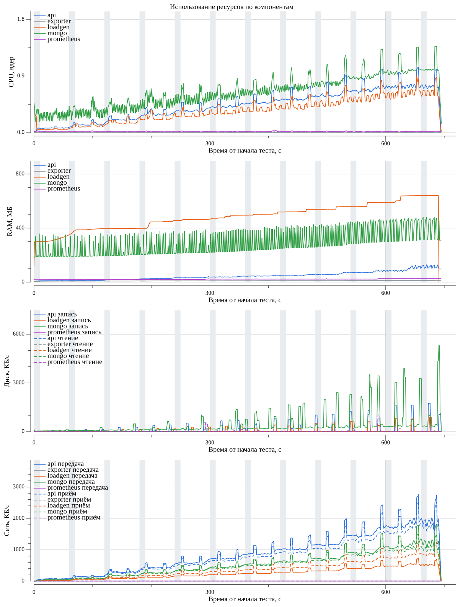

Ступенчатое увеличение нагрузки
Запросов539274
RPS среднее / медиана749 / 663
p50 / p95 задержки2.48 / 176 мс
p99 задержки388 мс
Отказы0.00%
Ошибочные операции0.00%
Стабильная работа до 1500 VU (~681 RPS). Нарушение SLO начинается с не найдена в пределах теста. Максимальная пропускная способность 1667 RPS при 1200 VU.
Задержка
| Задержка, мс | count | min | mean | p50 | p75 | p90 | p95 | p99 | max |
|---|---|---|---|---|---|---|---|---|---|
| Все запросы | 539274 | -1354 | 34.6 | 2.48 | 32.5 | 98.9 | 176 | 388 | 1192 |
| Корректные операции | 539274 | -1354 | 34.6 | 2.48 | 32.5 | 98.9 | 176 | 388 | 1192 |
| Ошибочные операции | 0 | — | — | — | — | — | — | — | — |



Операции пользовательского сценария
| Операция | count | min | mean | p50 | p75 | p90 | p95 | p99 | max | Отказы | Ошибочные |
|---|---|---|---|---|---|---|---|---|---|---|---|
| book_appointment | 78280 | 0.03 | 39.5 | 2.73 | 41.0 | 131 | 232 | 339 | 478 | 0.00% | 0.00% |
| browse_schedule | 78340 | 0.02 | 19.9 | 1.66 | 22.3 | 62.9 | 107 | 170 | 261 | 0.00% | 0.00% |
| cancel_appointment | 23523 | 0.03 | 39.3 | 2.47 | 40.3 | 131 | 230 | 348 | 463 | 0.00% | 0.00% |
| complete_visit | 54359 | 0.03 | 35.0 | 2.34 | 37.2 | 106 | 201 | 325 | 463 | 0.00% | 0.00% |
| login | 78349 | -1354 | 18.2 | 1.41 | 20.6 | 57.1 | 93.4 | 165 | 270 | 0.00% | 0.00% |
| my_appointments | 78199 | 0.03 | 21.9 | 1.61 | 23.4 | 72.8 | 121 | 182 | 266 | 0.00% | 0.00% |
| register | 16198 | 0.04 | 16.5 | 1.44 | 19.6 | 50.8 | 78.9 | 157 | 254 | 0.00% | 0.00% |
| start_visit | 54515 | 0.03 | 56.1 | 3.24 | 55.2 | 192 | 338 | 494 | 664 | 0.00% | 0.00% |
| visit_history | 77511 | 0.02 | 60.9 | 4.06 | 55.4 | 179 | 335 | 686 | 1192 | 0.00% | 0.00% |

Пропускная способность
| Показатель | count | min | mean | p50 | p75 | p90 | p95 | p99 | max |
|---|---|---|---|---|---|---|---|---|---|
| RPS за секунду | 720 | 0.00 | 749 | 663 | 1156 | 1517 | 1659 | 2502 | 2863 |


Фазы нагрузки
| Участок | VU | RPS ср. | RPS p50 | RPS p5 | p50 мс | p95 мс | p99 мс | Отказы | CPU api | CPU mongo | RAM api, МБ | SLO |
|---|---|---|---|---|---|---|---|---|---|---|---|---|
| разгон до 50 | 50 | 45.3 | 52.5 | 9.60 | 1.50 | 4.73 | 18.4 | 0.00% | 0.05 | 0.30 | 7.36 | да |
| 50 VU | 50 | 66.8 | 65.0 | 56.5 | 1.59 | 3.81 | 14.9 | 0.00% | 0.07 | 0.27 | 10.9 | да |
| разгон до 100 | 100 | 134 | 124 | 92.8 | 1.44 | 3.14 | 12.3 | 0.00% | 0.12 | 0.35 | 12.4 | да |
| 100 VU | 100 | 137 | 130 | 118 | 1.50 | 4.95 | 21.3 | 0.00% | 0.13 | 0.33 | 12.6 | да |
| разгон до 200 | 200 | 285 | 250 | 217 | 1.32 | 5.18 | 22.4 | 0.00% | 0.20 | 0.39 | 17.5 | да |
| 200 VU | 200 | 276 | 264 | 244 | 1.33 | 5.93 | 24.1 | 0.00% | 0.22 | 0.40 | 19.1 | да |
| разгон до 300 | 300 | 437 | 394 | 381 | 1.32 | 9.32 | 31.0 | 0.00% | 0.28 | 0.45 | 24.7 | да |
| 300 VU | 300 | 414 | 393 | 373 | 1.37 | 14.9 | 34.7 | 0.00% | 0.31 | 0.50 | 26.6 | да |
| разгон до 400 | 400 | 524 | 518 | 495 | 1.35 | 23.9 | 44.7 | 0.00% | 0.34 | 0.53 | 32.4 | да |
| 400 VU | 400 | 566 | 529 | 490 | 1.31 | 17.3 | 37.5 | 0.00% | 0.37 | 0.55 | 33.0 | да |
| разгон до 500 | 500 | 638 | 642 | 594 | 1.40 | 27.2 | 47.0 | 0.00% | 0.41 | 0.58 | 37.6 | да |
| 500 VU | 500 | 708 | 660 | 622 | 1.35 | 26.7 | 47.2 | 0.00% | 0.45 | 0.63 | 39.6 | да |
| разгон до 600 | 600 | 768 | 778 | 738 | 1.43 | 35.5 | 56.3 | 0.00% | 0.46 | 0.64 | 44.2 | да |
| 600 VU | 600 | 851 | 785 | 751 | 1.46 | 37.8 | 59.8 | 0.00% | 0.51 | 0.70 | 46.4 | да |
| разгон до 700 | 700 | 898 | 900 | 868 | 1.58 | 44.1 | 65.1 | 0.00% | 0.53 | 0.70 | 51.0 | да |
| 700 VU | 700 | 985 | 919 | 863 | 1.60 | 44.1 | 67.1 | 0.00% | 0.57 | 0.77 | 52.7 | да |
| разгон до 800 | 800 | 1019 | 1020 | 979 | 1.83 | 49.5 | 75.4 | 0.00% | 0.58 | 0.77 | 57.0 | да |
| 800 VU | 800 | 1177 | 1079 | 997 | 2.13 | 56.2 | 83.5 | 0.00% | 0.65 | 0.86 | 61.2 | да |
| разгон до 1000 | 1000 | 1262 | 1256 | 1231 | 2.28 | 64.9 | 117 | 0.00% | 0.66 | 0.87 | 70.5 | да |
| 1000 VU | 1000 | 1441 | 1352 | 1234 | 6.66 | 87.7 | 161 | 0.00% | 0.73 | 0.96 | 75.6 | да |
| разгон до 1200 | 1200 | 1489 | 1497 | 1434 | 12.2 | 92.6 | 164 | 0.00% | 0.72 | 0.95 | 83.4 | да |
| 1200 VU | 1200 | 1667 | 1561 | 1452 | 41.6 | 282 | 503 | 0.00% | 0.78 | 1.03 | 96.0 | да |
| разгон до 1500 | 1500 | 1590 | 1586 | 1362 | 128 | 466 | 751 | 0.00% | 0.74 | 1.00 | 115 | да |
| 1500 VU | 1500 | 681 | 0.00 | 0.00 | 117 | 427 | 679 | 0.00% | 0.69 | 0.97 | 110 | да |
Поиск предела производительности


Использование ресурсов
| Компонент | Метрика | min | max | mean | median | p95 |
|---|---|---|---|---|---|---|
| api | CPU, ядер | 0.01 | 1.04 | 0.44 | 0.46 | 0.76 |
| api | Троттлинг CPU, с/с | 0.00 | 0.04 | 0.00 | 0.00 | 0.01 |
| api | Чтение с диска, КБ/с | 0.00 | 167 | 1.80 | 0.00 | 0.00 |
| api | Запись на диск, КБ/с | 0.00 | 1740 | 109 | 0.00 | 833 |
| api | RAM (working set), МБ | 3.87 | 128 | 46.0 | 41.2 | 106 |
| api | Сеть, приём КБ/с | 0.05 | 2527 | 800 | 745 | 1772 |
| api | Сеть, передача КБ/с | 0.11 | 2761 | 885 | 821 | 1944 |
| api | Процессы и потоки | 7.00 | 16.0 | 8.95 | 9.00 | 10.0 |
| exporter | CPU, ядер | 0.00 | 0.01 | 0.00 | 0.00 | 0.01 |
| exporter | Троттлинг CPU, с/с | 0.00 | 0.00 | 0.00 | 0.00 | 0.00 |
| exporter | Чтение с диска, КБ/с | 0.00 | 175 | 7.23 | 0.00 | 54.0 |
| exporter | Запись на диск, КБ/с | 0.00 | 0.00 | 0.00 | 0.00 | 0.00 |
| exporter | RAM (working set), МБ | 3.88 | 12.8 | 9.89 | 10.4 | 12.4 |
| exporter | Сеть, приём КБ/с | 0.48 | 0.67 | 0.50 | 0.48 | 0.66 |
| exporter | Сеть, передача КБ/с | 3.55 | 5.66 | 4.25 | 4.07 | 5.56 |
| exporter | Процессы и потоки | 4.00 | 6.00 | 5.23 | 5.00 | 6.00 |
| loadgen | CPU, ядер | 0.00 | 0.90 | 0.35 | 0.34 | 0.67 |
| loadgen | Троттлинг CPU, с/с | 0.00 | 0.00 | 0.00 | 0.00 | 0.00 |
| loadgen | Чтение с диска, КБ/с | 0.00 | 2.00 | 0.01 | 0.00 | 0.00 |
| loadgen | Запись на диск, КБ/с | 0.00 | 872 | 50.6 | 0.00 | 376 |
| loadgen | RAM (working set), МБ | 0.00 | 641 | 484 | 495 | 641 |
| loadgen | Сеть, приём КБ/с | 0.00 | 1258 | 381 | 349 | 866 |
| loadgen | Сеть, передача КБ/с | 0.00 | 738 | 250 | 239 | 542 |
| loadgen | Процессы и потоки | 0.00 | 9.00 | 8.15 | 8.00 | 9.00 |
| mongo | CPU, ядер | 0.14 | 1.38 | 0.65 | 0.64 | 1.01 |
| mongo | Троттлинг CPU, с/с | 0.01 | 1.25 | 0.28 | 0.22 | 0.87 |
| mongo | Чтение с диска, КБ/с | 0.00 | 150 | 1.98 | 0.00 | 2.00 |
| mongo | Запись на диск, КБ/с | 14.0 | 5336 | 438 | 197 | 1980 |
| mongo | RAM (working set), МБ | 183 | 479 | 291 | 259 | 457 |
| mongo | Сеть, приём КБ/с | 0.11 | 1503 | 504 | 475 | 1082 |
| mongo | Сеть, передача КБ/с | 0.05 | 1820 | 550 | 506 | 1231 |
| mongo | Процессы и потоки | 39.0 | 153 | 90.3 | 83.0 | 148 |
| prometheus | CPU, ядер | 0.01 | 0.03 | 0.02 | 0.02 | 0.02 |
| prometheus | Троттлинг CPU, с/с | 0.00 | 0.00 | 0.00 | 0.00 | 0.00 |
| prometheus | Чтение с диска, КБ/с | 0.00 | 1031 | 8.97 | 0.00 | 0.00 |
| prometheus | Запись на диск, КБ/с | 0.00 | 6.00 | 0.65 | 0.00 | 5.00 |
| prometheus | RAM (working set), МБ | 17.5 | 30.1 | 21.5 | 21.9 | 26.2 |
| prometheus | Сеть, приём КБ/с | 3.64 | 5.66 | 4.25 | 4.07 | 5.56 |
| prometheus | Сеть, передача КБ/с | 0.48 | 0.69 | 0.51 | 0.48 | 0.66 |
| prometheus | Процессы и потоки | 8.00 | 14.0 | 8.06 | 8.00 | 8.00 |

Коды ответов
| Код | Запросов |
|---|---|
| 200 | 390281 |
| 201 | 148993 |
Окружение прогона
| Компонент | Логические CPU | Квота CPU | Резерв RAM, МБ | Лимит RAM, МБ | Образ | ID образа |
|---|---|---|---|---|---|---|
| api | 0,1 | 1 | 512 | 512 | vitaline-lab6-api:20261124-222015-ramp-mqcf | 34bab9a88d5d |
| exporter | 6,7 | — | 64 | 64 | vitaline-lab4-exporter:1 | 5d8e679d55a3 |
| loadgen | 4,5 | — | 2048 | 2048 | grafana/k6:1.3.0 | 3ddc8b1a33a2 |
| mongo | 2,3 | 1 | 1024 | 1024 | mongo:7 | 41e8195b2791 |
| prometheus | 6,7 | — | 768 | 768 | prom/prometheus:v3.5.0 | 63805ebb8d2b |